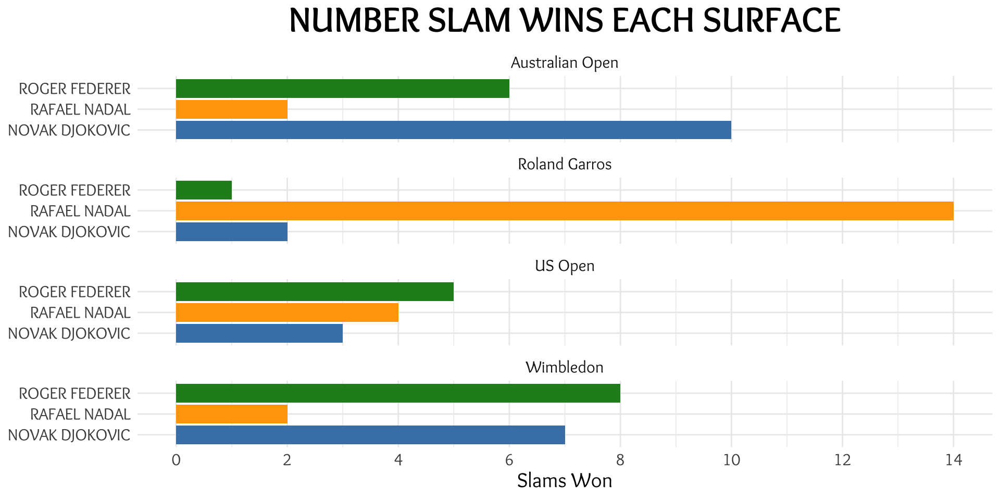
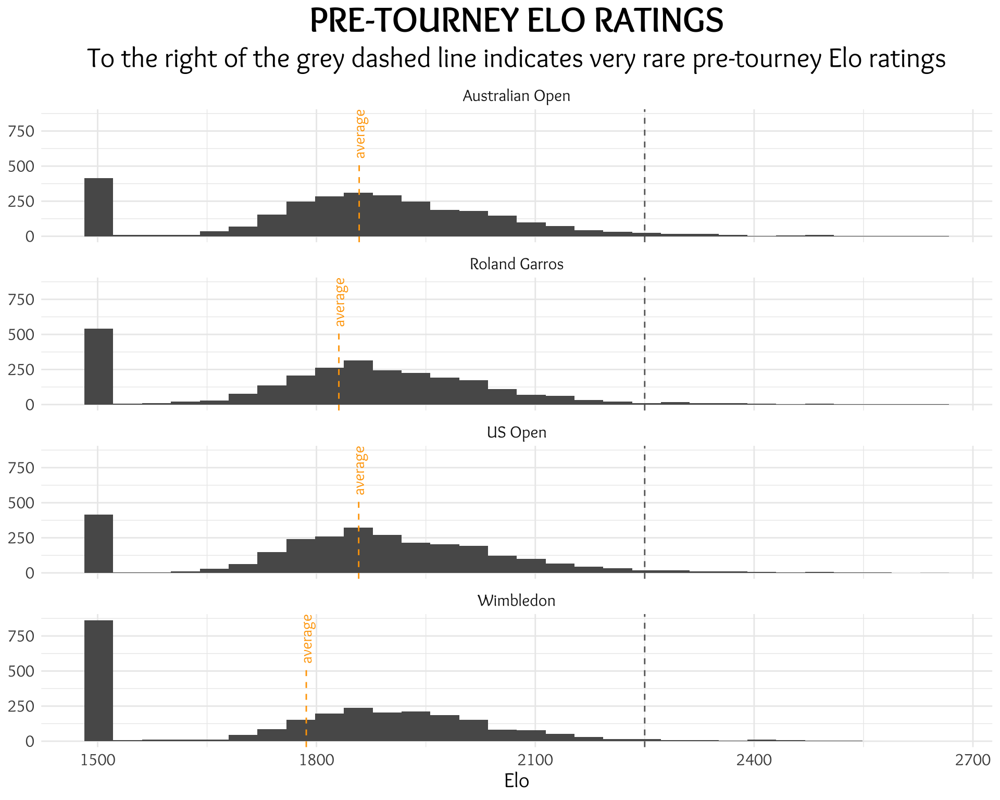
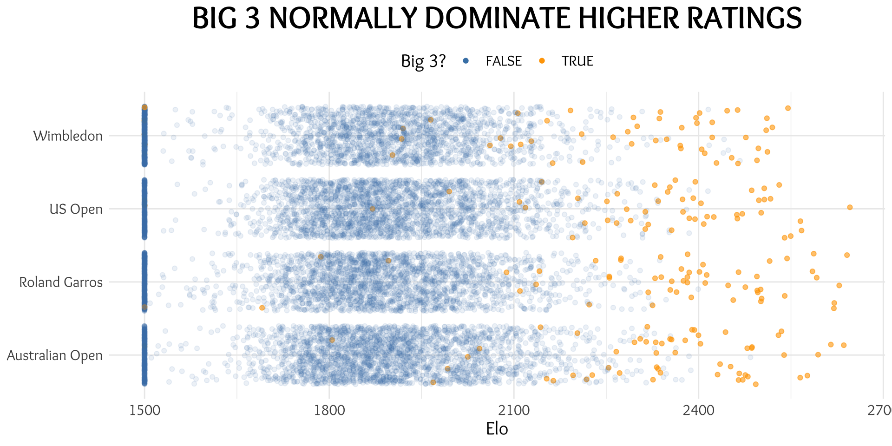
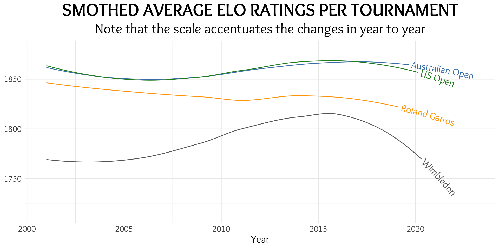
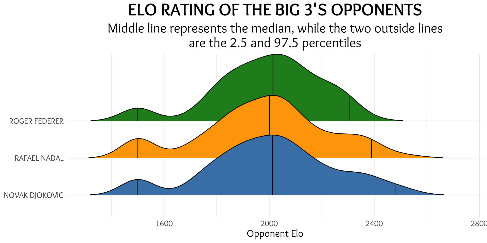
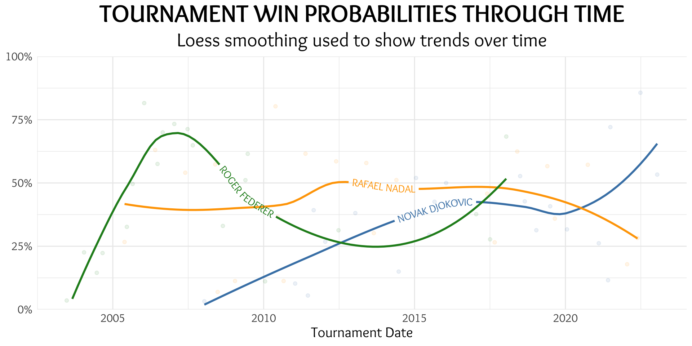

Introduction
As the current (2023) Australian Open came to a close with Novak Djokovic winning a record equaling 22nd Grand Slam, the expected discourse on who is the best player of all time is back on the agenda. One discussion thread centers around the ease of Djokovic run to the 2023 Australian Open title, and that maybe this title isn’t worth as many as others (listen to the the Wharton Moneyball podcast talk about it at around the 84 minute mark here).
This post won’t be about which player is the best of all time - that’s already been done ad nauseam - but what it will aim to do is better understand the difficulty of each of the big three’s grand slams wins and whether we can infer anything from that.
I’ve tried to answer this question using some numbers. The main metric being used in this analysis is Elo ratings. I’m not going to go into the guts of the Elo rating system, other than to say that it performs exceptionally well in explaining skill levels of players in competitive head to head matches and predicting the outcome of these games using the difference in each players’ rating. Specifically for this analysis, when we refer to the Elo rating, we’re referring to the player’s relevant pre-tournament surface-specific Elo rating.
There are a number of ways that this could be achieved. Presented in this post are only a few ways to do that. I’d be really keen for some engagement on this post on whether you agree/disagree with the methods employed and where the holes are in these methods used.
To freshen our memories, below are the slam wins each of the big three have achieved over the different slams:

The Data
All completed Grand Slams since the beginning of 2001 up until the end of the 2023 Australia Open have been analysed for this post. That’s 88 grand slams, with the notable exception of the COVID-19 forced cancellation of the 2020 Wimbledon event.
Acknowledgements
Before we dive in to the analysis, I need to offer thanks to a few people. First, Elo data was obtained from the brilliant site Ultimate Tennis Statistics. Elo ratings specific to the surface being played on has been used. Their calculations on coming up with an elo rating is explained here.
Next, I’d love to thank Jeff Sackmann for his brilliant Tennis Data repository, especially for the ATP results data found here.
Big thanks to Andrew Whelan (who has a brilliant site Wheelo Ratings providing statistics, records and Elo ratings for a number of sports) for being a sounding board, as have some great colleagues at work.
Finally, there have been many inspirations for this post, including the thought-provoking discussions had on the Wharton Moneyball podcast anytime tennis is brought up.
Analysis
To get started and to understand the Elo ratings of players, we can take a look at the distribution of surface-specific Elo ratings for players playing in grand slams.
The peaks for all tournaments at 1,500 needs explaining - when a player enters a tournament, they may not necessarily have played enough on the surface, so as a default these players are given a rating of 1,500 for this analysis (Ultimate Tennis Statistics starts a player off on a rating of 1,500 also).
The distribution of Elo ratings appear to be distributed fairly similarly across the four grand slams. There are more players who have had an Elo of 1,500 for Wimbledon, but other than that, the differences are fairly negligible.
Important to note with the distribution of each tournaments, having a pre-tournament Elo rating greater than 2,250 (two standard deviations from the mean) is pretty rare, and even rarer still for a player to have an Elo rating higher than 2,250 that isn’t one of the big 3.


Elo Criticism
One (probably valid) criticism of Elo ratings is that the average Elo rating can change over time and across eras so may not be comparable over time (e.g. an Elo rating of 2,000 in 2005 may not be equivalent to 2,000 in 2023). This needs to be considered when assessing the results in the below sections.
To get an idea of how these ratings have changed over time, the average Elo rating of competitors at each grand slam is plotted below. Important to note that the y-axis scale (Elo ratings) doesn’t start at zero, so the fluctuations are accentuated.

Looking at individual grand slams and the distribution of Elo ratings of the opponents of the big three in their grand slam wins, we can see that they typically have faced very similar rated players. Federer’s median opponent Elo rating in his tournament wins has been sightly the highest of the three (2,014, Djokovic 2,012 and Nadal 2,002), however his average (arithmetic mean) is slightly lower at 1,992 than that of Djokovic (2,004). Nadal has both the lowest median and average opponent Elo in his grand slam wins. This is because Federer hasn’t played as many high rated outliers as Djokovic has (and to a lesser extent Nadal).

Standardising Elo
A potential flaw in using the Elo ratings of each tournament is that it doesn’t normalise for the distribution of talent (Elo ratings) over time. Some year’s tournaments may see more higher rated players competing, while other tournaments may contain weaker fields. When comparing across different time periods, it might be better to attempt to standardise each opponents’ strength rating.
One way to do this is to calculate the standard score (z-score) for each player’s rating, which essentially ranks the players rating within the confines of the distribution of the space selected - in this case each tournament over the entire 22 and a bit years. I won’t go into the full details of the z-score, however a simple way to think about it is a z-score of zero indicates the opponent’s Elo rating is average. The higher it goes above zero, the better the Elo rating is historically (conversely the further below zero it goes the worse the Elo rating).
For example, Stafanos Tsitsipas’s pre 2023 Aus Open Elo rating was 2,176, which gives a z-score of 1.62 for the 2023 Aus Open, however the z-score for all Aus Opens over the period analysed is 1.57. Given that his historical z-score is slightly lower suggests that the 2023 Aus Open may have been generally weaker overall than other years.
We can then sum these historical z-scores up for each tournament and give a comparable strength score for each grand slam win. Put simply, the higher this number is, the tougher the opponents faced for their respective winning tournaments.
To compare each of the big three over their respective winning grand slams, we can take an average tournament z-score of opponents ratings to see which of the three had tougher tournament opponents.
This method shows that Djokovic has beaten the historically toughest opponents on average during his 22 grand slams. The average total z-score of his opponents has been 5.7, followed by Federer’s 5.3. Nadal lags behind the three at 4.9, indicating that his 22 grand slams may have been slightly easier (relative of course) on average than the other big three.
| Name | Average Tournament Strength |
|---|---|
| NOVAK DJOKOVIC | 5.722 |
| RAFAEL NADAL | 4.905 |
| ROGER FEDERER | 5.342 |
Expected Win Probability
Instead of using the raw Elo ratings and standardising them, we can also infer each of the big three’s win probability using their’s and their opponent’s Elo ratings.
To do this, we first need to calculate the win probability of each match given each player’s Elo rating. For example, the win probability for Djokovic (Elo=2,452) in his fourth round match against Alex De Minaur (Elo=2,076) was 89.7%. From here, we take the product of each win probability and come up with an overall win probability. For example, Djokovic’s 2023 Aus Open win probabilities for each of his matches were 97.5%, 99.6%, 93.1%, 89.7%, 86.7%, 91.4%, 83.0% from his first round match to the final, respectively. Multiplying each of these win probabilities give us a total win probability of 53.3%. The closer we get to 100%, the more we expect that player to have won the tournament. This can also be a simple place holder for the strength of each tournament win - closer to 100%, the easier their run was.
Under this method, we can see that Djokovic’s 2008 Australian Open win (his first grand slam) was the least expected win of all 64 slams these three have won with an expected win probability of 3.24%. Additionally, three of the five least expected slam wins have been by Djokovic. Federer’s first grand slam (Wimbledon 2003) was really close to being the least expected (3.55%).
| LEAST PROBABLE TOURNAMENT WINS | |||
| Year | Slam | Name | Tournament Win Probability |
|---|---|---|---|
| 2008 | Australian Open | NOVAK DJOKOVIC | 3.24% |
| 2003 | Wimbledon | ROGER FEDERER | 3.55% |
| 2011 | Wimbledon | NOVAK DJOKOVIC | 5.51% |
| 2008 | Wimbledon | RAFAEL NADAL | 6.92% |
| 2011 | Australian Open | NOVAK DJOKOVIC | 10.25% |
Without looking deeply at Djokovic’s 2008 Australian Open run and only looking at his final opponent (France’s Jo Wilfried Tsonga), it would be easy to believe that with an expected win probability in that final of 86.9% that this was an easy title win. Unpacking this a little deeper shows that he needed to get through Australia’s own Lleyton Hewitt in the round of 16 with a win probability of 67.5% (better than a coin flip), David Ferrer in the quarters at 54.2% (basically a coin flip) and Federer at 14.2% (a heavy underdog) in the semi-final before he had a chance to play in the final.
| DJOKOVIC'S 2008 AUSTRALIAN OPEN OPPONENTS | ||||
| Year | Slam | Round | Opponent | Match Win Probability |
|---|---|---|---|---|
| 2008 | Australian Open | R128 | BENJAMIN BECKER | 89.05% |
| 2008 | Australian Open | R64 | SIMONE BOLELLI | 91.86% |
| 2008 | Australian Open | R32 | SAM QUERREY | 87.43% |
| 2008 | Australian Open | R16 | LLEYTON HEWITT | 67.50% |
| 2008 | Australian Open | QF | DAVID FERRER | 54.16% |
| 2008 | Australian Open | SF | ROGER FEDERER | 14.23% |
| 2008 | Australian Open | F | JO-WILFRIED TSONGA | 86.92% |
Conversely, Djokovic’s 2022 Wimbledon title was the most expected of all the big three’s grand slams, with a tournament win probability of 85.7%. Djokovic’s 2021 Wimbledon title was the fifth most expected title (72.1%).
| MOST PROBABLE TOURNAMENT WINS | |||
| Year | Slam | Name | Tournament Win Probability |
|---|---|---|---|
| 2022 | Wimbledon | NOVAK DJOKOVIC | 85.66% |
| 2006 | Australian Open | ROGER FEDERER | 81.58% |
| 2010 | Roland Garros | RAFAEL NADAL | 80.30% |
| 2007 | Australian Open | ROGER FEDERER | 73.33% |
| 2021 | Wimbledon | NOVAK DJOKOVIC | 72.08% |
Not hard to believe when we look at his run in that tournament - his lowest individual match win probability came in the final (92.5%), where he defeated Australia’s very erratic Nick Kyrgios. Other than that, it looked a very soft title.
| DJOKOVIC'S 2022 WIMBLEDON OPPONENTS | ||||
| Year | Slam | Round | Opponent | Match Win Probability |
|---|---|---|---|---|
| 2022 | Wimbledon | R128 | SOON WOO KWON | 98.74% |
| 2022 | Wimbledon | R64 | THANASI KOKKINAKIS | 99.72% |
| 2022 | Wimbledon | R32 | MIOMIR KECMANOVIC | 97.82% |
| 2022 | Wimbledon | R16 | TIM VAN RIJTHOVEN | 99.72% |
| 2022 | Wimbledon | QF | JANNIK SINNER | 99.72% |
| 2022 | Wimbledon | SF | CAMERON NORRIE | 96.70% |
| 2022 | Wimbledon | F | NICK KYRGIOS | 92.48% |
While it was neat looking at individual slams in the above section, we can aggregate all the tournament win probabilities to better understand how well each have done in getting to the amount of slams they’ve won given how many they were expected to have won.
Of the three, Federer’s average tournament win probability over his 20 slam wins was the highest, averaging 44.3% win probability. If we were to sum up all of the individual tournament win probabilities and arrive at an expected number of wins, we can see that Federer was in fact expected to have won more slams than Djokovic if the slams they won were repeated over and over again.
Similarly, Rafa’s average win probability was a touch lower than Federer’s, but given he has won two more slams, his expected wins are even higher than Djokovic’s.
| PERFORMANCE AGAINST EXPECTATION | ||||
| Comparing the big 3s expected wins and their actual wins | ||||
| Name | Number Slams | Average Tourney Win Probability1 | Expected Wins2 | Wins above Expected3 |
|---|---|---|---|---|
| NOVAK DJOKOVIC | 22 | 36.50% | 8.03 | 13.97 |
| RAFAEL NADAL | 22 | 42.61% | 9.38 | 12.62 |
| ROGER FEDERER | 20 | 44.28% | 8.86 | 11.14 |
| 1 The average of all winning slam's win probabilities | ||||
| 2 Calculated as the sum of all tournament win probabilities (only for the tournaments they won) | ||||
| 3 The difference between the slams win total minus the Expected Wins | ||||
It’s also interesting to note how each of the big three’s expected tournament win probabilities have changed over their career.
Pre-2020, Nadal has consistently been expected to win at a higher rate than the other two - most likely a result of his Roland Garros dominance. That win probability has been dropping on average in recent years as he’s started winning on his “least” preferred surfaces. Conversely, Djokovic’s win probability has been increasing over time.

Finishing Up
So what does this tell us?
In this post I’ve tried to use Elo to quantify the difficulty rating of each superstar’s phenomenal achievements in getting to the number of slams they have individually. Again, as stated at the very beginning of this post, this is in no way an attempt to rank the big three - far from it.
We did however see that the metrics used in this post would suggest that it’s not true that Djokovic’s has had an easy ride during his 22 grand slams wins. They have been quite the opposite on both fronts; the opponents he’s faced over his 22 wins seemingly rated more highly than that of Nadal and Federer, while also having outperformed his expected win probability by a greater margin than that of the other big three.
While it’s a shame the majestic Roger Federer ever needed to retire, I’m really excited to continue to enjoy the once in a lifetime experience of seeing multiple transcendent stars continue to dominate their sport concurrently.
Would love feedback on the post and have holes poked in it wherever they need poking!
Thanks!